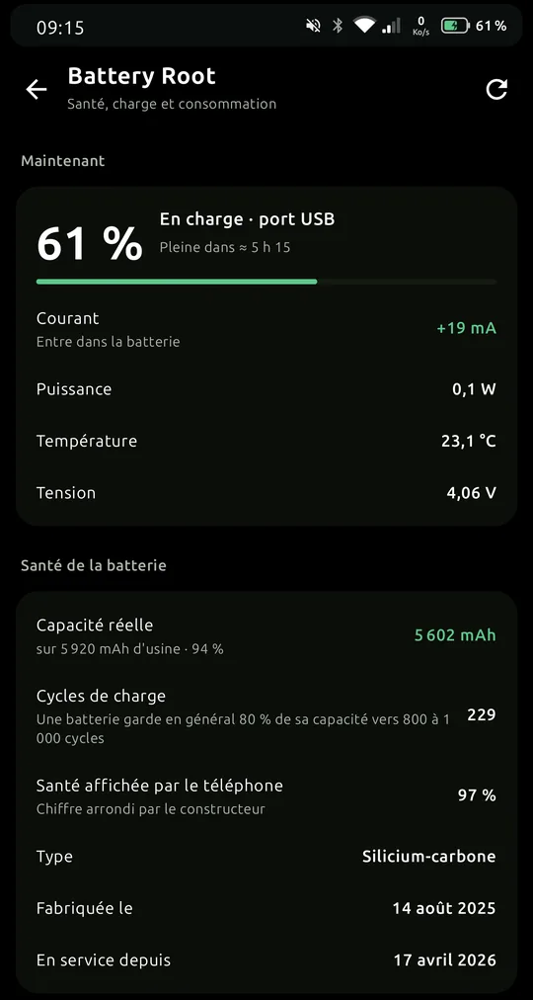
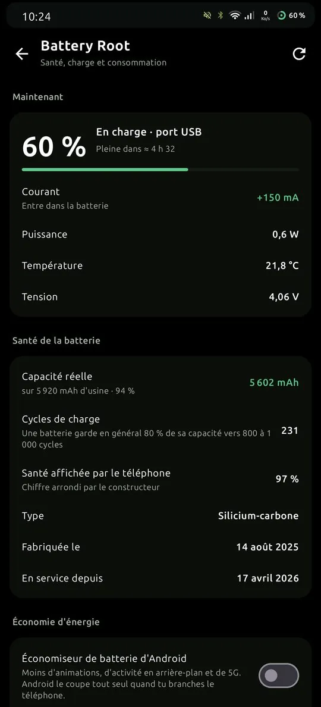

Battery Root
Battery health, charge control, per-app consumption.
Shows the battery's real state read by the kernel: health, temperature, charge or discharge current.
It also shows which apps consume the most, and lets you control charging on devices that allow it.
Hibernation: on an app, "Hibernate app" cuts it off completely, without uninstalling it. It can no longer start, in the background or on a tap, and uses nothing. It appears in the "Hibernated apps" list, where "Wake app" restores it straight away.
Only root allows this clean cut: Dante disables the app at system level, like the security freeze does. A simple power-saving list leaves the app free to wake up on its own.
Tips
On a phone other than a OnePlus, some values may be missing or have an inverted sign: the module then shows "limited information".
Per-app consumption needs access to usage statistics.
Android system apps cannot be hibernated, nor can Dante itself or protected apps.
The manufacturer's power saving works separately, root or not: it slows down or stops background apps by its own rules. Battery Root does not need it in order to hibernate an app.
OnePlus (OxygenOS): Dante OS runs its firewall and DNS filter in the background. Set Dante OS to "Don't optimise" in the app's battery optimisation, otherwise OxygenOS may stop those services. Labels change with the version: search for "optimi" in Settings.
Samsung: Settings > Battery > Background usage limits. An app in "deep sleep" receives no notifications until it is opened: add Dante OS to the "Never sleeping apps" list.
Xiaomi, Huawei, Google Pixel and others: each brand has its own manager (auto-start, app launch, background restrictions). For Dante OS, set it to "no restriction". Android also sorts rarely used apps into more restricted buckets and limits their tasks.

